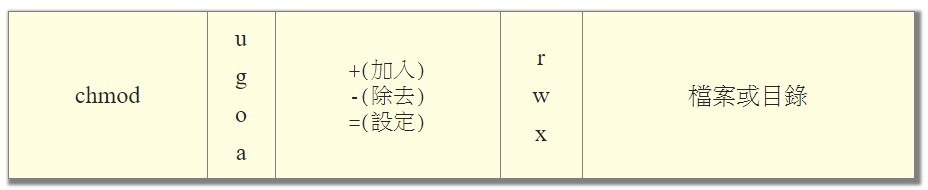

Permission
檔案
- 鳥哥的 Linux 私房菜 -- 第五章、Linux 的檔案權限與目錄配置
- -R, --recursive change files and directories recursively
Linux檔案的基本權限就有九個，分別是 owner/group/others 三種身份各有自己的read/write/execute權限。
檔案的權限字元為: 『-rwxrwxrwx』，這九個權限是三個三個一組的!
其中，我們可以使用數字來代表各個權限，各權限的分數對照表: r:4, w:2, x:1。
每種身份(owner/group/others)各自的三個權限(r/w/x)分數是需要累加的。
還有一個改變權限的方法，基本上就九個權限分別是 user(owner)/group/others 三種身份。
那麼我們就可以藉由 u, g, o 來代表三種身份的權限，a則代表 all 亦即全部的身份。
讀、寫、執行的權限就可以寫成r, w, x。

chmod a+x <filename or folder>
//下面兩個語法等價。
chmod a+rwx <filename or folder>
chmod 777 <filename or folder>--
目錄之擁有者或群組
- Linux 更改檔案擁有者與群組，chown 指令使用教學與範例 - G. T. Wang
- -R, --recursive change files and directories recursively
chown -R ubuntu /data2/bigobject
chown -R ubuntu:ubuntu /data2/bigobject